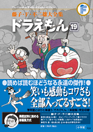

| |

＜『てれびくん』掲載集＞
定価1,785円（税込）
A5判／594ページ
好評発売中！
★は初めて単行本に収録される
作品です。
※収録内容は変更になる
場合があります。

|
| スリルブーメラン（1979年5月号） |
| タンポポ空を行く（1979年6月号） |
| スパイ衛星でさぐれ（1979年7月号） |
| ★ペタリ甲板（1979年8月号） |
| 行け！ ノビタマン（1979年9月号） |
| ヘソリンガスでしあわせに（1979年10月号） |
| 雪男のアルバイト（1979年11月号） |
| まねコン（1979年12月号） |
| 設計紙で秘密基地を！（1980年1月号） |
| 天の川鉄道の夜（1980年2月号） |
| ひろびろ日本（1980年3月号） |
| メカ・メーカー（1980年4月号） |
| デビルカード（1980年5月号） |
| 二十世紀のおとのさま（1980年6月号） |
| おざしき水族館（1980年7月号） |
| アヤカリンで幸運を（1980年8月号） |
| 水加工用ふりかけ（1980年9月号） |
| なかまいりせんこう（1980年10月号） |
| 本人ビデオ（1980年11月号） |
| まんが家ジャイ子（1980年12月号） |
| 森は生きている（1981年1月号） |
| しずめ玉でスッキリ（1981年2月号） |
| かがみのない世界（1981年3月号） |
| 円ピツで大金持ち（1981年4月号） |
|
| 平和アンテナ（1981年5月号） |
| 六面カメラ（1981年6月号） |
| グンニャリジャイアン（1981年7月号） |
| 魔女っ子しずちゃん（1981年8月号） |
| 細く長い友だち（1981年9月号） |
| 腹話ロボット（1981年10月号） |
| テレビとりもち（1981年11月号） |
| ユニコーンにのった（1981年12月号） |
| 地底のドライ・ライト（1982年1月号） |
| ペタンコアイロン（1982年2月号） |
| ★カンゲキドリンク（1982年3月号） |
| ねむりの天才のび太（1982年4月号） |
| まんがのつづき（1982年5月号） |
| 翼ちゃんがうちへきた（1982年6月号） |
| インスタントロボット（1982年7月号） |
| あいつを固めちゃえ（1982年8月号） |
| キャラクター商品注文機（1982年9月号） |
| 変身・変身・また変身（1982年10月号） |
| まんが家ジャイ子先生（1982年11月号） |
| ジャイアンテレビにでる！（1982年12月号） |
| 野生ペット小屋（1983年1月号） |
| ためしにさようなら（1983年2月号） |
| ビデオ式なんでもリモコン（1983年3月号） |
|
|